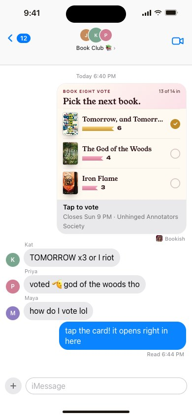
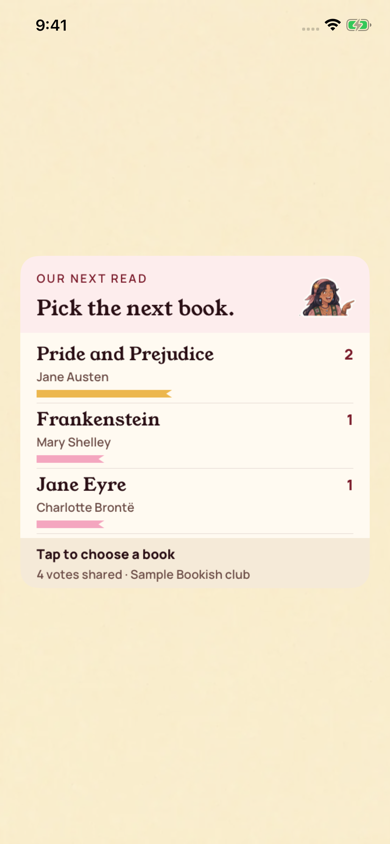

All screens41. iMessage: live vote bubble
Oct 18 approval receipt verified
Partial: native UIKit review host
Actual CardRenderer output hosted in UIKit. Apple’s Messages transcript chrome and transport are not captured.
Native provenance, reproduction, and device-validation limits
Approved reference
Actual UIKit content in standalone simulator host
Additional actual native states: transcript vote.
Original source: /Users/vahallo/ted-screenshots/bookish-club/full-app-1016/html/41-imessage-live-vote.html